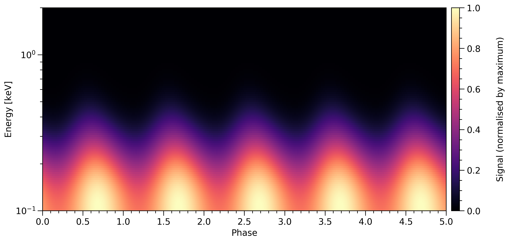

X-PSI¶
An open-source package for neutron star X-ray Pulse Simulation and Inference.
X-PSI is designed to simulate rotationally-modified (pulsed) surface X-ray emission from neutron stars, taking into account relativistic effects on the emitted radiation. This can then be used to perform Bayesian statistical inference on real or simulated astronomical data sets. Model parameters of interest may include neutron star mass and radius (useful to constrain the properties of ultradense nuclear matter) or the system geometry and properties of the hot emitting surface-regions. To achieve this, X-PSI couples code for likelihood functionality (simulation) with existing open-source software for posterior sampling (inference).
Concept¶
The video below, generated by X-PSI, shows a neutron star with non-uniform surface temperature, as it rotates. In this specific case the star hosts a photospheric radiation field whose asymmetry is driven by an underlying ocean wave (a buoyant \(r\)-mode) of thermonuclear burning. The wave is effectively periodic over a small number of rotational cycles. The simulation was generated by feeding a wave solution, computed by Frank Chambers (University of Amsterdam),[1] in the form of a field of temperatures in surface local-comoving frames (\(\sim\! 10^{6}\,\mathrm{K}\)), to X-PSI for photospheric imaging. A number of simplifying assumptions are made in mode calculation and imaging, but this serves to illustrate the simulation and visualisation of a neutron star that pulses in the X-ray regime due to rotational modulation of some mode of radiative asymmetry at the surface.
Each panel displays a specific photon intensity sky map. Panels from top-left to bottom-right increase in photon energy. The intensity field in each panel is uniquely normalised to the maximum intensity over all phases and sky directions. The remarkable evolution of the image with photon energy is due to relativistic beaming: at energies much greater than the characteristic temperature, the contribution to the image is entirely dominated by the hottest region of the surface being relativistically beamed toward the observer as it approaches on the left-side of the star. This is the same effect seen in many other astrophysical simulations, particularly of images of (supermassive) accreting black holes (for instance by the Event Horizon Telescope collaboration), although it was interestingly omitted from the motion picture film Interstellar.[2]
The following image integrates (and thus averages) over waveband (a range of photon energies). We also decrease the mode frequency relative to the stellar spin frequency, such that the mode is not as equatorially trapped.[3]
If one integrates over solid angle (i.e., over sky directions), one is left with a specific photon flux in a joint space of photon energy and time (i.e., rotational phase). This is natural because galactic neutron stars subtend far too small a solid angle on the sky to be spatially resolved by any telescope: they are point sources. We must nevertheless account for the variation of intensity with sky direction if we are to compute the data-generating process. If one then integrates over phase, the phase-averaged spectrum of photons incident on a telescope is yielded; if one instead integrates over some waveband, a photon pulse-profile is yielded. The following displays several cycles of a phase-energy resolved pulse-profile generated by the more equatorially trapped, \(r\)-mode rendered above.
The integration over energy is, for likelihood function evaluation, modified by a kernel for the response of an X-ray telescope to the incident radiation field.
Footnotes
| [1] | See, e.g., Chambers & Watts 2020. |
| [2] | See James et al. 2015. |
| [3] | There are a number of visualisation possibilities. For instance, we could average the image(s) over phase and/or energy to yield a single static image; we could plot phase evolution in one spatial dimension (with energy variation in the second) or two spatial dimensions (perhaps with energy dependence rendered in time). We could also render in space and/or time, variation of the images with stellar parameters such as gravitational mass, and geometric parameters such as observer inclination to the stellar rotation axis. We could plot an image evolving in time, with other panels rendering a photon specrum and a pulse-profile evolving in time with the image; here is an example. |
Citation¶
If X-PSI proves to be a useful tool for your work, please cite the project as a software acknowledgement, e.g.:
X-PSI (\url{https://github.com/xpsi-group/xpsi.git}, \citet{xpsi})
@MISC{xpsi,
author = {{Riley}, Thomas Edward},
title = "{X-PSI: X-ray Pulse Simulation and Inference}",
keywords = {Software},
year = 2021,
month = feb,
eid = {ascl:2102.005},
pages = {ascl:2102.005},
archivePrefix = {ascl},
eprint = {2102.005},
adsurl = {https://ui.adsabs.harvard.edu/abs/2021ascl.soft02005R},
adsnote = {Provided by the SAO/NASA Astrophysics Data System}
}
A JOSS paper is being drafted for the first major release.
The technical notes in the repository on path /docs/technical will be
updated and made available on the arXiv in the future. The first version of a
subset of these technical notes appeared in a PhD thesis which you could cite
if you wish to cite a published work in the meantime:
@phdthesis{riley19,
author = {{Riley}, Thomas E.},
title = "{Neutron star parameter estimation from a NICER perspective}",
school = {University of Amsterdam},
year = 2019,
address = {https://hdl.handle.net/11245.1/aa86fcf3-2437-4bc2-810e-cf9f30a98f7a},
month = 12
}
If you wish to point to the first published applications of the X-PSI package, then please cite Riley et al. 2019 (ApJL, 887, L21) and Riley et al. 2021 (ApJL in press):
@article{riley19,
author = {{Riley}, T.~E. and {Watts}, A.~L.
and {Bogdanov}, S.
and {Ray}, P.~S.
and {Ludlam}, R.~M.
and {Guillot}, S.
and {Arzoumanian}, Z.
and {Baker}, C.~L.
and {Bilous}, A.~V.
and {Chakrabarty}, D.
and {Gendreau}, K.~C.
and {Harding}, A.~K.
and {Ho}, W.~C.~G.
and {Lattimer}, J.~M.
and {Morsink}, S.~M.
and {Strohmayer}, T.~E.},
title = "{A NICER View of PSR J0030+0451: Millisecond Pulsar Parameter Estimation}",
doi = {10.3847/2041-8213/ab481c},
journal = {\apjl},
month = dec,
year = 2019,
volume = 887,
pages = {L21}
}
@article{riley21,
author = {{Riley}, Thomas E. and {Watts}, Anna L.
and {Ray}, Paul S.
and {Bogdanov}, Slavko
and {Guillot}, Sebastien
and {Morsink}, Sharon M.
and {Bilous}, Anna V.
and {Arzoumanian}, Zaven
and {Choudhury}, Devarshi
and {Deneva}, Julia S.
and {Gendreau}, Keith C.
and {Harding}, Alice K.
and {Ho}, Wynn C.~G.
and {Lattimer}, James M.
and {Loewenstein}, Michael
and {Ludlam}, Renee M.
and {Markwardt}, Craig B.
and {Okajima}, Takashi
and {Prescod-Weinstein}, Chanda
and {Remillard}, Ronald A.
and {Wolff}, Michael T.
and {Fonseca}, Emmanuel
and {Cromartie}, H. Thankful
and {Kerr}, Matthew
and {Pennucci}, Timothy T.
and {Parthasarathy}, Aditya
and {Ransom}, Scott
and {Stairs}, Ingrid
and {Guillemot}, Lucas
and {Cognard}, Ismael},
title = "{A NICER View of the Massive Pulsar PSR J0740+6620 Informed by Radio Timing and XMM-Newton Spectroscopy}",
journal = {arXiv e-prints},
keywords = {Astrophysics - High Energy Astrophysical Phenomena, Astrophysics - Solar and Stellar Astrophysics, Nuclear Theory},
year = 2021,
month = may,
eid = {arXiv:2105.06980},
pages = {arXiv:2105.06980},
archivePrefix = {arXiv},
eprint = {2105.06980},
primaryClass = {astro-ph.HE},
adsurl = {https://ui.adsabs.harvard.edu/abs/2021arXiv210506980R},
adsnote = {Provided by the SAO/NASA Astrophysics Data System}
}
This article contains a wealth of relevant information, including a number of schematic diagrams that might be of use. There is also an ApJL Focus Issue of which this article is a member.
Regardless of whether you cite the above articles, they critically demonstrate how to cite the numerous X-PSI dependencies that users of X-PSI benefit from. These citations may be found in the software acknowledgements and in the article text where the relevant software is applied. Links to the software and associated preprints and journal articles may be found in the bibliographies. Please follow the guidelines demonstrated in Riley et al. 2019 (ApJL, 887, L21) and Riley et al. 2021 (ApJL in press) to ensure the authors of the software receive the recognition they should. The dependencies often have their own citation instructions that should be followed first and foremost, but as an example from the Riley et al. 2021 (ApJL in press) arXiv source:
\newcommand{\project}[1]{\textsl{#1}\xspace}
\software{Python/C~language~\citep{python2007},
GNU~Scientific~Library~\citep[GSL;][]{Gough:2009},
NumPy~\citep{Numpy2011},
Cython~\citep{cython2011},
SciPy~\citep{Scipy},
OpenMP~\citep{openmp},
MPI~\citep{MPI},
\project{MPI for Python}~\citep{mpi4py},
Matplotlib~\citep{Hunter:2007,matplotlibv2},
IPython~\citep{IPython2007},
Jupyter~\citep{Kluyver:2016aa},
\MultiNest~\citep{MultiNest_2009},
\textsc{PyMultiNest}~\citep{PyMultiNest},
\project{GetDist}~\citep[][\url{https://github.com/cmbant/getdist}]{Lewis19},
\project{nestcheck}~\citep{higson2018nestcheck,higson2018sampling,higson2019diagnostic},
\project{fgivenx}~\citep{fgivenx},
\XPSI~\texttt{v0.7} (\url{https://github.com/ThomasEdwardRiley/xpsi}; \citealt{xpsi}).
@article{fgivenx,
doi = {10.21105/joss.00849},
year = {2018},
month = {Aug},
publisher = {The Open Journal},
volume = {3},
number = {28},
pages = {849},
author = {Will Handley},
title = {fgivenx: Functional Posterior Plotter},
journal = {The Journal of Open Source Software}
}
@article{higson2019diagnostic,
title={nestcheck: diagnostic tests for nested sampling calculations},
author={Higson, Edward and Handley, Will and Hobson, Mike and Lasenby, Anthony},
journal={Monthly Notices of the Royal Astronomical Society},
year={2019},
volume={483},
number={2},
pages={2044--2056},
doi={10.1093/mnras/sty3090},
archivePrefix={arXiv},
arxivId={1804.06406}
}
@article{higson2018sampling,
title={Sampling Errors in Nested Sampling Parameter Estimation},
author={Higson, Edward and Handley, Will and Hobson, Mike and Lasenby, Anthony},
year={2018},
journal={Bayesian Analysis},
number={3},
volume={13},
pages={873--896},
doi={10.1214/17-BA1075},
}
@article{higson2018nestcheck,
title={nestcheck: error analysis, diagnostic tests and plots for nested sampling calculations},
author={Higson, Edward},
year={2018},
journal={Journal of Open Source Software},
number={29},
pages={916},
volume={3},
doi={10.21105/joss.00916},
}
@ARTICLE{Lewis19,
author = {{Lewis}, Antony},
title = "{GetDist: a Python package for analysing Monte Carlo samples}",
journal = {arXiv e-prints},
keywords = {Astrophysics - Instrumentation and Methods for Astrophysics, Astrophysics - Cosmology and Nongalactic Astrophysics, Physics - Data Analysis, Statistics and Probability},
year = 2019,
month = oct,
eid = {arXiv:1910.13970},
pages = {arXiv:1910.13970},
archivePrefix = {arXiv},
eprint = {1910.13970},
primaryClass = {astro-ph.IM},
adsurl = {https://ui.adsabs.harvard.edu/abs/2019arXiv191013970L},
adsnote = {Provided by the SAO/NASA Astrophysics Data System}
}
@ARTICLE{PyMultiNest,
author = {{Buchner}, J. and {Georgakakis}, A. and {Nandra}, K. and {Hsu}, L. and {Rangel}, C. and {Brightman}, M. and {Merloni}, A. and {Salvato}, M. and {Donley}, J. and {Kocevski}, D.},
title = "{X-ray spectral modelling of the AGN obscuring region in the CDFS: Bayesian model selection and catalogue}",
journal = {\aap},
archivePrefix = "arXiv",
eprint = {1402.0004},
primaryClass = "astro-ph.HE",
keywords = {accretion, accretion disks, methods: data analysis, methods: statistical, galaxies: nuclei, X-rays: galaxies, galaxies: high-redshift},
year = 2014,
month = apr,
volume = 564,
eid = {A125},
pages = {A125},
doi = {10.1051/0004-6361/201322971},
adsurl = {http://adsabs.harvard.edu/abs/2014A\%26A...564A.125B},
adsnote = {Provided by the SAO/NASA Astrophysics Data System}
}
@ARTICLE{MultiNest_2009,
author = {{Feroz}, F. and {Hobson}, M.~P. and {Bridges}, M.},
title = "{MULTINEST: an efficient and robust Bayesian inference tool for cosmology and particle physics}",
journal = {\mnras},
archivePrefix = "arXiv",
eprint = {0809.3437},
keywords = {methods: data analysis , methods: statistical},
year = 2009,
month = oct,
volume = 398,
pages = {1601-1614},
doi = {10.1111/j.1365-2966.2009.14548.x},
adsurl = {http://adsabs.harvard.edu/abs/2009MNRAS.398.1601F},
adsnote = {Provided by the SAO/NASA Astrophysics Data System}
}
@conference{Kluyver:2016aa,
Author = {Thomas Kluyver and Benjamin Ragan-Kelley and Fernando P{\'e}rez and Brian Granger and Matthias Bussonnier and Jonathan Frederic and Kyle Kelley and Jessica Hamrick and Jason Grout and Sylvain Corlay and Paul Ivanov and Dami{\'a}n Avila and Safia Abdalla and Carol Willing},
Booktitle = {Positioning and Power in Academic Publishing: Players, Agents and Agendas},
Editor = {F. Loizides and B. Schmidt},
Organization = {IOS Press},
Pages = {87 - 90},
Title = {Jupyter Notebooks -- a publishing format for reproducible computational workflows},
Year = {2016}
}
@ARTICLE{IPython2007,
author={F. {Perez} and B. E. {Granger}},
journal={Computing in Science Engineering},
title={IPython: A System for Interactive Scientific Computing},
year={2007},
volume={9},
number={3},
pages={21-29},
keywords={data visualisation;natural sciences computing;object-oriented languages;object-oriented programming;parallel programming;software libraries;IPython;interactive scientific computing;comprehensive library;data visualization;distributed computation;parallel computation;Scientific computing;Libraries;Data visualization;Spine;Supercomputers;Hardware;Data analysis;Testing;Production;Parallel processing;Python;computer languages;scientific programming;scientific computing},
doi={10.1109/MCSE.2007.53},
ISSN={1521-9615},
month={May}
}
@misc{matplotlibv2,
author = {Michael Droettboom and
Thomas A Caswell and
John Hunter and
Eric Firing and
Jens Hedegaard Nielsen and
Antony Lee and
Elliott Sales de Andrade and
Nelle Varoquaux and
David Stansby and
Benjamin Root and
Phil Elson and
Darren Dale and
Jae-Joon Lee and
Ryan May and
Jouni K. Seppänen and
Jody Klymak and
Damon McDougall and
Andrew Straw and
Paul Hobson and
cgohlke and
Tony S Yu and
Eric Ma and
Adrien F. Vincent and
Steven Silvester and
Charlie Moad and
Jan Katins and
Nikita Kniazev and
Tim Hoffmann and
Federico Ariza and
Peter Würtz},
title = {matplotlib/matplotlib v2.2.2},
month = mar,
year = 2018,
publisher = {Zenodo},
doi = {10.5281/zenodo.1202077},
}
@Article{Hunter:2007,
Author = {Hunter, J. D.},
Title = {Matplotlib: A 2D graphics environment},
Journal = {Computing in Science \& Engineering},
Volume = {9},
Number = {3},
Pages = {90--95},
abstract = {Matplotlib is a 2D graphics package used for Python for
application development, interactive scripting, and publication-quality
image generation across user interfaces and operating systems.},
publisher = {IEEE COMPUTER SOC},
doi = {10.1109/MCSE.2007.55},
year = 2007
}
@article{mpi4py,
author = {Lisandro Dalc\'{i}n and Rodrigo Paz and Mario Storti and Jorge D'El\'{i}a},
title = {MPI for Python: Performance improvements and MPI-2 extensions},
journal = {Journal of Parallel and Distributed Computing},
volume = {68},
number = {5},
pages = {655-662},
year = {2008},
issn = {0743-7315},
doi = {10.1016/j.jpdc.2007.09.005},
keywords = {Message passing, MPI, High-level languages, Parallel Python}
}
@techreport{MPI,
author = {Forum, Message P},
title = {MPI: A Message-Passing Interface Standard},
year = {1994},
url = {https://www.mpi-forum.org/docs/mpi-1.0/mpi-10.ps},
publisher = {University of Tennessee},
address = {Knoxville, TN, USA}
}
@article{openmp,
Author = {Dagum, Leonardo and Menon, Ramesh},
Date-Added = {2014-07-24 11:13:01 +0000},
Date-Modified = {2014-07-24 11:13:01 +0000},
Journal = {Computational Science \& Engineering, IEEE},
Number = {1},
Pages = {46--55},
Publisher = {IEEE},
Title = {OpenMP: an industry standard API for shared-memory programming},
Volume = {5},
Year = {1998}
}
@misc{Scipy,
author = {Eric Jones and Travis Oliphant and Pearu Peterson and others},
title = {{SciPy}: Open source scientific tools for {Python}},
year = {2001--},
url = "http://www.scipy.org/",
note = {[Online; accessed 21.06.2019]}
}
@ARTICLE{cython2011,
author={S. {Behnel} and R. {Bradshaw} and C. {Citro} and L. {Dalcin} and D. S. {Seljebotn} and K. {Smith}},
journal={Computing in Science Engineering},
title={Cython: The Best of Both Worlds},
year={2011},
volume={13},
number={2},
pages={31-39},
keywords={C language;numerical analysis;Python language extension;Fortran code;numerical loops;Cython language;programming language;Sparse matrices;Runtime;Syntactics;Computer programs;Programming;Python;Cython;numerics;scientific computing},
doi={10.1109/MCSE.2010.118},
ISSN={1521-9615},
month={March}
}
@ARTICLE{Numpy2011,
author={S. {van der Walt} and S. C. {Colbert} and G. {Varoquaux}},
journal={Computing in Science Engineering},
title={The NumPy Array: A Structure for Efficient Numerical Computation},
year={2011},
volume={13},
number={2},
pages={22-30},
keywords={data structures;high level languages;mathematics computing;numerical analysis;numerical computation;numpy array;numerical data;high level language;Python programming language;Arrays;Numerical analysis;Performance evaluation;Computational efficiency;Finite element methods;Vector quantization;Resource management;Python;NumPy;scientific programming;numerical computations;programming libraries},
doi={10.1109/MCSE.2011.37},
ISSN={1521-9615},
month={March}
}
@book{Gough:2009,
author = {Gough, Brian},
title = {GNU Scientific Library Reference Manual - Third Edition},
year = {2009},
isbn = {0954612078, 9780954612078},
edition = {3rd},
publisher = {Network Theory Ltd.}
}
@ARTICLE{Python2007,
author={T. E. {Oliphant}},
journal={Computing in Science Engineering},
title={Python for Scientific Computing},
year={2007},
volume={9},
number={3},
pages={10-20},
keywords={high level languages;Python;scientific computing;steering language;scientific codes;high-level language;Scientific computing;High level languages;Libraries;Writing;Application software;Embedded software;Software standards;Standards development;Internet;Prototypes;Python;computer languages;scientific programming;scientific computing},
doi={10.1109/MCSE.2007.58},
ISSN={1521-9615},
month={May}
}
State of development¶
The targeted release for the first major version of X-PSI is 2021. Future development plans and the project History provide a breakdown of the state of the project.
The initial development of X-PSI was checkpointed with the completion of
Riley et al. 2019 (ApJL, 887, L21), and tagged as v0.1. X-PSI remains, however, in the
initial development stage. Backwards incompatible
changes will be committed without incrementing the major version.
The package should not be considered stable, and as such has not been
packaged for automatic installation via a package manager (namely Conda nor
PyPI). To install X-PSI from source, and to install dependencies, see the
Installation page.
Note
These documentation pages are being rapidly updated during development.
These pages were generated from a local development build.
The pages often reference v0.1 that is tagged on the master
branch of the repo, but that version is not explicitly documented.
The tutorials and examples in these documentation pages however, use
v0.5 of X-PSI. The required files (i.e., data files and NICER v1.01
instrument files) may be obtained from a different repository due to file size
considerations:
git clone https://github.com/ThomasEdwardRiley/xpsi_workshop.git </path/to/clone>
This repository also contains unexecuted tutorial notebooks with less verbosity if this is preferred. Refer to the repository README for instructions regarding large files.
Other examples may be found on path xpsi/examples. Note, however, that these
examples used v0.1 of X-PSI, which can be checked out via the tag on the
master branch. Eventually, example files will be archived with Zenodo
to accompany a JOSS paper. Moreover, the examples require cluster usage and will
have to be updated for release of the first major version of X-PSI.
User Guide
Development
Tutorials
Likelihood API
Extension modules
Posterior API